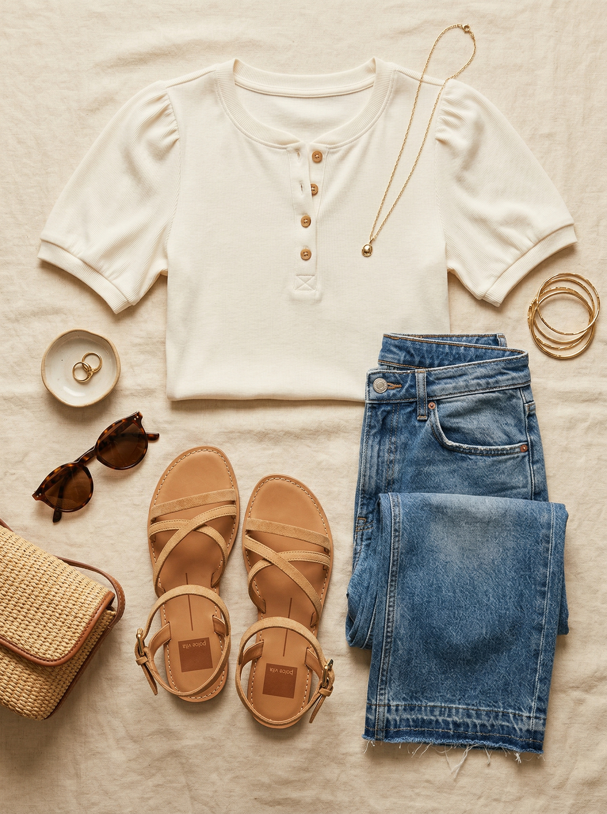
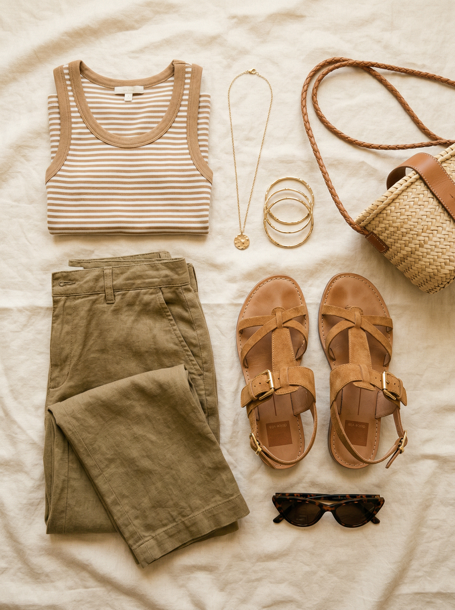
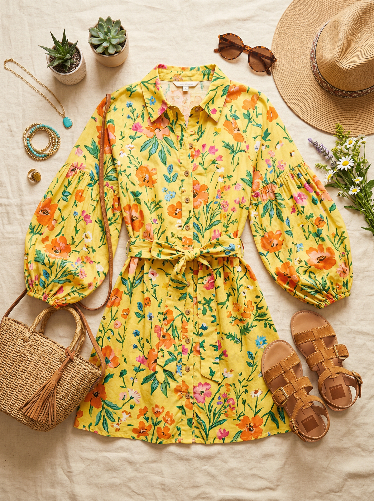

Shore Sandals
A strappy flat sandal with the perfect amount of detail — buckle closures, thin criss-cross straps, camel suede that gets better with wear. Dolce Vita hits the sweet spot between trendy and quality. These aren't drugstore flip-flops but they won't break the bank either. The camel suede is a warm neutral that goes with absolutely everything casual in your closet.
Shop NowWhy This Pick
You have zero casual sandals — your only warm-weather shoe options are sneakers. For DFW summers, that's a real gap. The Dolce Vita Shore is a strappy flat with just enough detail (those buckle straps) to feel like a real choice rather than an afterthought. Camel suede is a warm neutral that bridges every color in your casual wardrobe — from jeans to linen pants to the new yellow floral dress. This shoe earns its $130.
3 Ways to Wear It
Styled with pieces already in your closet


